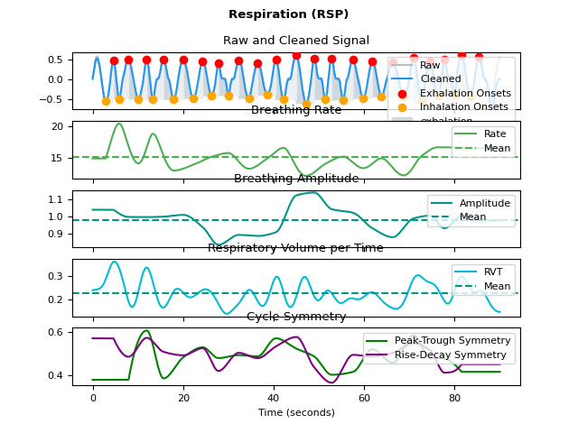
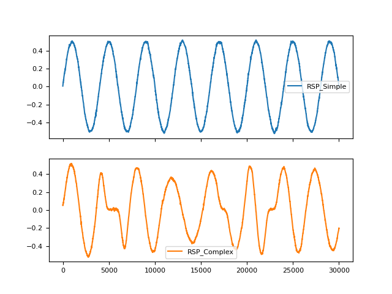
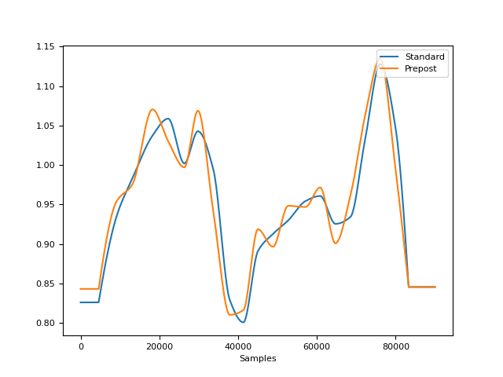
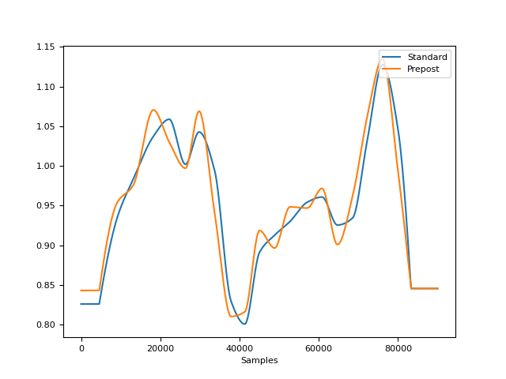
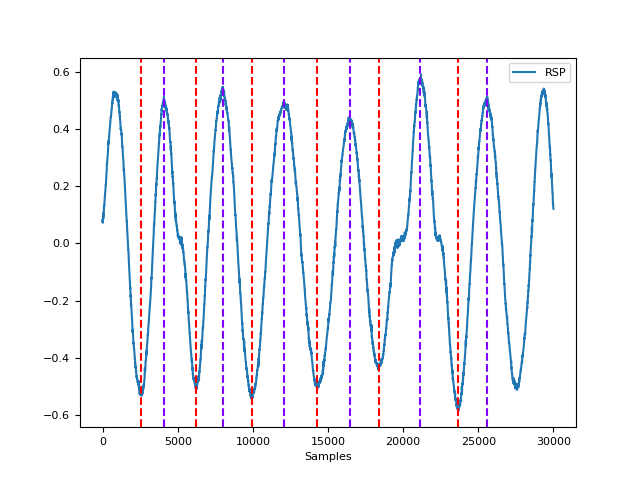
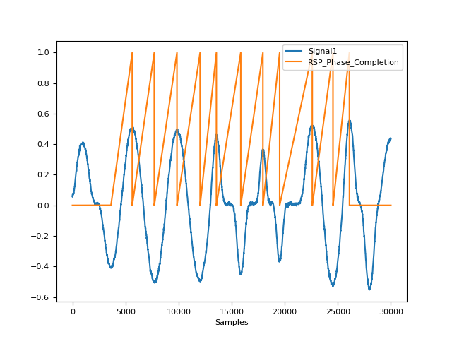
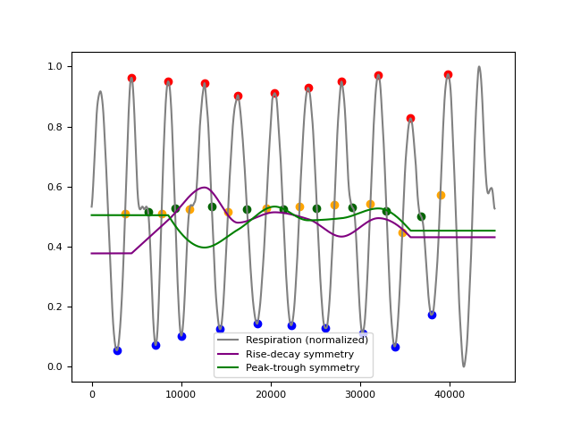
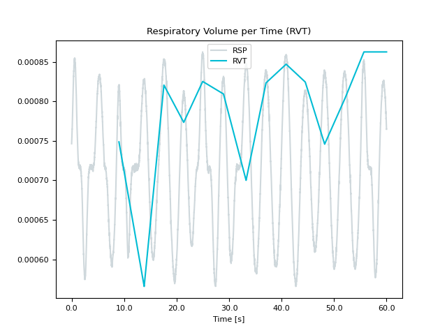
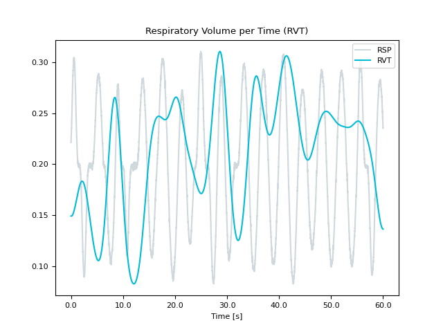
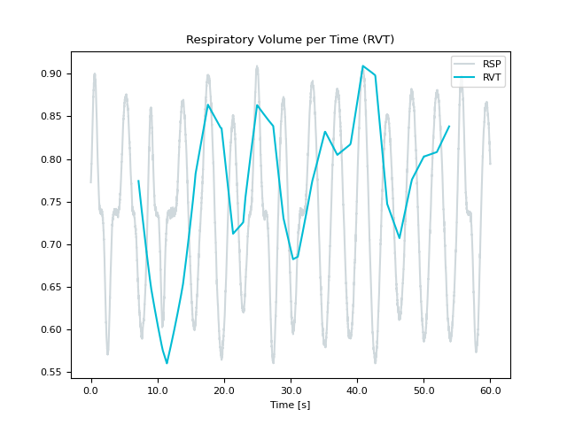

RSP#
Main#
rsp_process()#
- rsp_process(rsp_signal, sampling_rate=1000, method='khodadad2018', method_rvt='harrison2021', report=None, **kwargs)[source]#
Process a respiration (RSP) signal
Convenience function that automatically processes a respiration signal with one of the following methods:
- Parameters:
rsp_signal (Union[list, np.array, pd.Series]) – The raw respiration channel (as measured, for instance, by a respiration belt).
sampling_rate (int) – The sampling frequency of
rsp_signal()(in Hz, i.e., samples/second).method (str) – The processing pipeline to apply. Can be one of
"khodadad2018"(default) or"biosppy".method_rvt (str) – The rvt method to apply. Can be one of
"harrison2021"(default),"birn2006"or"power2020".report (str) – The filename of a report containing description and figures of processing (e.g.
"myreport.html"). Needs to be supplied if a report file should be generated. Defaults toNone. Can also be"text"to just print the text in the console without saving anything.**kwargs – Other arguments to be passed to specific methods. For more information, see
rsp_methods().
- Returns:
signals (DataFrame) – A DataFrame of same length as
rsp_signal()containing the following columns:"RSP_Raw": the raw signal."RSP_Clean": the cleaned signal."RSP_Peaks": the respiratory peaks (exhalation onsets) marked as “1” in a list of zeros."RSP_Troughs": the respiratory troughs (inhalation onsets) marked as “1” in a list of zeros."RSP_Rate": breathing rate interpolated between inhalation peaks."RSP_Amplitude": breathing amplitude interpolated between inhalation peaks."RSP_Phase": breathing phase, marked by “1” for inspiration and “0” for expiration."RSP_Phase_Completion": breathing phase completion, expressed in percentage (from 0 to 1), representing the stage of the current respiratory phase.
"RSP_RVT": respiratory volume per time (RVT).
info (dict) – A dictionary containing the samples at which inhalation peaks and exhalation troughs occur, accessible with the keys
"RSP_Peaks", and"RSP_Troughs"respectively, as well as the signals’ sampling rate.
See also
rsp_clean,rsp_findpeaks,signal_rate,rsp_amplitude,rsp_plot,rsp_phase,rsp_rvt,rsp_symmetryExamples
In [1]: import neurokit2 as nk In [2]: rsp = nk.rsp_simulate(duration=90, respiratory_rate=15) In [3]: signals, info = nk.rsp_process(rsp, sampling_rate=1000, report="text") The raw signal, sampled at 1000 Hz, linear detrending followed by a fifth order 2Hz low-pass IIR Butterworth filter; following Khoadadad et al., 2018. The peak detection was carried out using the method described in Khoadadad et al. (2018). The respiratory volume per time computation was carried out using the method described in Harrison et al. (2021). | RSP_Rate_Mean | RSP_Rate_SD | |----------------:|--------------:| | 14.4184 | 1.82706 | References - Harrison, S. J., Bianchi, S., Heinzle, J., Stephan, K. E., Iglesias, S., & Kasper, L. (2021). A Hilbert-based method for processing respiratory timeseries. Neuroimage, 230, 117787. - Khodadad, D., Nordebo, S., Müller, B., Waldmann, A., Yerworth, R., Becher, T., ... & Bayford, R. (2018). Optimized breath detection algorithm in electrical impedance tomography. Physiological measurement, 39(9), 094001. - Khodadad, D., Nordebo, S., Müller, B., Waldmann, A., Yerworth, R., Becher, T.,... & Bayford, R. (2018). Optimized breath detection algorithm in electrical impedance tomography. Physiological measurement, 39(9), 094001. - Makowski, D., Pham, T., Lau, Z. J., Brammer, J. C., Lespinasse, F., Pham, H., Schölzel, C., & Chen, S. A. (2021). NeuroKit2: A Python toolbox for neurophysiological signal processing. Behavior Research Methods, 53(4), 1689–1696. https://doi.org/10.3758/s13428-020-01516-y In [4]: fig = nk.rsp_plot(signals, info)
{kind=link}
rsp_analyze()#
- rsp_analyze(data, sampling_rate=1000, method='auto')[source]#
RSP Analysis
Performs RSP analysis on either epochs (event-related analysis) or on longer periods of data such as resting-state data.
- Parameters:
data (dict or DataFrame) – A dictionary of epochs, containing one DataFrame per epoch, usually obtained via
epochs_create(), or a DataFrame containing all epochs, usually obtained viaepochs_to_df(). Can also take a DataFrame of processed signals from a longer period of data, typically generated byrsp_process()orbio_process(). Can also take a dict containing sets of separate periods of data.sampling_rate (int) – The sampling frequency of the signal (in Hz, i.e., samples/second). Defaults to 1000Hz.
method (str) – Can be one of
"event-related"for event-related analysis on epochs, or"interval-related"for analysis on longer periods of data. Defaults to"auto"where the right method will be chosen based on the mean duration of the data ("event-related"for duration under 10s).
- Returns:
DataFrame – A dataframe containing the analyzed RSP features. If event-related analysis is conducted, each epoch is indicated by the Label column. See
rsp_eventrelated()andrsp_intervalrelated()docstrings for details.
See also
bio_process,rsp_process,epochs_create,rsp_eventrelated,rsp_intervalrelatedExamples
In [1]: import neurokit2 as nk # Example 1: Download the data for event-related analysis In [2]: data = nk.data("bio_eventrelated_100hz") # Process the data for event-related analysis In [3]: df, info = nk.bio_process(rsp=data["RSP"], sampling_rate=100) In [4]: events = nk.events_find(data["Photosensor"], threshold_keep='below', ...: event_conditions=["Negative", "Neutral", "Neutral", "Negative"]) ...: In [5]: epochs = nk.epochs_create(df, events, sampling_rate=100, epochs_start=-0.1, epochs_end=1.9) # Analyze In [6]: nk.rsp_analyze(epochs, sampling_rate=100) Out[6]: Label Condition ... RSP_RVT_Baseline RSP_RVT_Mean 1 1 Negative ... 0.225643 0.004368 2 2 Neutral ... 0.169809 -0.013798 3 3 Neutral ... 0.127095 0.008785 4 4 Negative ... 0.080601 0.001421 [4 rows x 23 columns] # Example 2: Download the resting-state data In [7]: data = nk.data("bio_resting_5min_100hz") # Process the data In [8]: df, info = nk.rsp_process(data["RSP"], sampling_rate=100) # Analyze In [9]: nk.rsp_analyze(df, sampling_rate=100) Out[9]: RSP_Rate_Mean ... RSP_Phase_Duration_Ratio 0 15.860331 ... 0.664482 [1 rows x 40 columns]
rsp_simulate()#
- rsp_simulate(duration=10, length=None, sampling_rate=1000, noise=0.01, respiratory_rate=15, method='breathmetrics', random_state=None, random_state_distort='spawn')[source]#
Simulate a respiratory signal
Generate an artificial (synthetic) respiratory signal of a given duration and rate.
- Parameters:
duration (int) – Desired length of duration (s).
sampling_rate (int) – The desired sampling rate (in Hz, i.e., samples/second).
length (int) – The desired length of the signal (in samples).
noise (float) – Noise level (amplitude of the laplace noise).
respiratory_rate (float) – Desired number of breath cycles in one minute.
method (str) – The model used to generate the signal. Can be
"sinusoidal"for a simulation based on a trigonometric sine wave that roughly approximates a single respiratory cycle. If"breathmetrics"(default), will use an advanced model desbribed by Noto, et al. (2018).random_state (None, int, numpy.random.RandomState or numpy.random.Generator) – Seed for the random number generator. See for
misc.check_random_statefor further information.random_state_distort ({‘legacy’, ‘spawn’}, None, int, numpy.random.RandomState or numpy.random.Generator) – Random state to be used to distort the signal. If
"legacy", use the same random state used to generate the signal (discouraged as it creates dependent random streams). If"spawn", spawn independent children random number generators from the random_state argument. If any of the other types, generate independent children random number generators from the random_state_distort provided (this allows generating multiple version of the same signal distorted by different random noise realizations).
See also
rsp_clean,rsp_findpeaks,signal_rate,rsp_process,rsp_plot- Returns:
array – Vector containing the respiratory signal.
Examples
In [1]: import pandas as pd In [2]: import neurokit2 as nk In [3]: rsp1 = nk.rsp_simulate(duration=30, method="sinusoidal") In [4]: rsp2 = nk.rsp_simulate(duration=30, method="breathmetrics") In [5]: pd.DataFrame({"RSP_Simple": rsp1, "RSP_Complex": rsp2}).plot(subplots=True) Out[5]: array([<Axes: >, <Axes: >], dtype=object)
References
Noto, T., Zhou, G., Schuele, S., Templer, J., & Zelano, C. (2018). Automated analysis of breathing waveforms using BreathMetrics: A respiratory signal processing toolbox. Chemical Senses, 43(8), 583-597.
{kind=link}
rsp_plot()#
- rsp_plot(rsp_signals, info=None, static=True)[source]#
Visualize respiration (RSP) data
- Parameters:
rsp_signals (DataFrame) – DataFrame obtained from
rsp_process().info (dict) – The information Dict returned by
rsp_process(). Defaults toNone.static (bool) – If True, a static plot will be generated with matplotlib. If False, an interactive plot will be generated with plotly. Defaults to True.
See also
- Returns:
See
ecg_plot()for details on how to access the figure, modify the size and save it.
Examples
In [1]: import neurokit2 as nk # Simulate data In [2]: rsp = nk.rsp_simulate(duration=90, respiratory_rate=15, sampling_rate=100) # Process signal In [3]: rsp_signals, info = nk.rsp_process(rsp, sampling_rate=100) # Plot In [4]: nk.rsp_plot(rsp_signals, info)

Preprocessing#
rsp_clean()#
- rsp_clean(rsp_signal, sampling_rate=1000, method='khodadad2018', **kwargs)[source]#
Preprocess a respiration (RSP) signal
Clean a respiration signal using different sets of parameters, such as:
khodadad2018: Linear detrending followed by a fifth order 2Hz low-pass IIR Butterworth filter)
BioSPPy: Second order 0.1-0.35 Hz bandpass Butterworth filter followed by a constant detrending).
hampel: Applies a median-based Hampel filter by replacing values which are 3 (can be changed via
threshold)mad()away from the rolling median.
- Parameters:
rsp_signal (Union[list, np.array, pd.Series]) – The raw respiration channel (as measured, for instance, by a respiration belt).
sampling_rate (int, optional) – The sampling frequency of
rsp_signal()(in Hz, i.e., samples/second).method (str, optional) – The processing pipeline to apply. Can be one of
"khodadad2018"(default),"biosppy"or"hampel".**kwargs – Other arguments to pass to the cleaning method.
- Returns:
array – Vector containing the cleaned respiratory signal.
See also
rsp_findpeaks,signal_rate,rsp_amplitude,rsp_process,rsp_plotExamples
In [1]: import pandas as pd In [2]: import neurokit2 as nk In [3]: rsp = nk.rsp_simulate(duration=30, sampling_rate=50, noise=0.1) In [4]: signals = pd.DataFrame({ ...: "RSP_Raw": rsp, ...: "RSP_Khodadad2018": nk.rsp_clean(rsp, sampling_rate=50, method="khodadad2018"), ...: "RSP_BioSPPy": nk.rsp_clean(rsp, sampling_rate=50, method="biosppy"), ...: "RSP_Hampel": nk.rsp_clean(rsp, sampling_rate=50, method="hampel", threshold=3) ...: }) ...: In [5]: signals.plot() Out[5]: <Axes: >

References
Khodadad, D., Nordebo, S., Müller, B., Waldmann, A., Yerworth, R., Becher, T., … & Bayford, R. (2018). Optimized breath detection algorithm in electrical impedance tomography. Physiological measurement, 39(9), 094001.
Power, J., Lynch, C., Dubin, M., Silver, B., Martin, A., Jones, R.,(2020) Characteristics of respiratory measures in young adults scanned at rest, including systematic changes and “missed” deep breaths. NeuroImage, Volume 204, 116234
rsp_amplitude()#
- rsp_amplitude(rsp_cleaned, peaks, troughs=None, method='standard', interpolation_method='monotone_cubic')[source]#
Compute respiratory amplitude
Compute respiratory amplitude given the raw respiration signal and its extrema. The standard method computes the amplitude as the difference between a peak and its preceding trough, while the prepost method computes the amplitude as the average of the differences of peak to its preceding and succeeding troughs (Cole, 2019).
- Parameters:
rsp_cleaned (Union[list, np.array, pd.Series]) – The cleaned respiration channel as returned by
rsp_clean().peaks (list or array or DataFrame or Series or dict) – The samples at which the respiration peaks (exhalation onsets) occur. If a dict or a DataFrame is passed, it is assumed that these containers were obtained with
rsp_findpeaks().troughs (list or array or DataFrame or Series or dict) – The samples at which the respiration troughs (inhalation onsets) occur. If a dict or a is passed, it is assumed that these containers were obtained with
rsp_findpeaks().method (str) – The method to use to compute the amplitude. Can be
"standard"or"prepost".interpolation_method (str) – Method used to interpolate the amplitude between peaks. See
signal_interpolate()."monotone_cubic"is chosen as the default interpolation method since it ensures monotone interpolation between data point (i.e., it prevents physiologically implausible “overshoots” or “undershoots” in the y-direction). In contrast, the widely used cubic spline ‘interpolation does not ensure monotonicity.
- Returns:
array – A vector containing the respiratory amplitude.
See also
rsp_clean,rsp_peaks,signal_rate,rsp_process,rsp_plot,rsp_symmetryExamples
In [1]: import neurokit2 as nk In [2]: rsp = nk.rsp_simulate(duration=90, respiratory_rate=15) In [3]: cleaned = nk.rsp_clean(rsp, sampling_rate=1000) In [4]: peak_signals, info = nk.rsp_peaks(cleaned) In [5]: amplitude = nk.rsp_amplitude(cleaned, peak_signals) In [6]: fig = nk.signal_plot([rsp, amplitude], labels=["RSP", "Amplitude"], subplots=True)
 
In [7]: amp2 = nk.rsp_amplitude(cleaned, peak_signals, method="prepost") In [8]: fig = nk.signal_plot([amplitude, amp2], labels=["Standard", "Prepost"])
References
Cole, S., & Voytek, B. (2019). Cycle-by-cycle analysis of neural oscillations. Journal of neurophysiology, 122(2), 849-861.
{kind=link}
rsp_peaks()#
- rsp_peaks(rsp_cleaned, sampling_rate=1000, method='khodadad2018', **kwargs)[source]#
Identify extrema in a respiration (RSP) signal
This function runs
rsp_findpeaks()andrsp_fixpeaks()to identify and process peaks (exhalation onsets) and troughs (inhalation onsets) in a preprocessed respiration signal using different sets of parameters, such as:khodad2018: Uses the parameters in Khodadad et al. (2018).
biosppy: Uses the parameters in BioSPPy’s
resp()function.scipy Uses the scipy peak-detection function.
- Parameters:
rsp_cleaned (Union[list, np.array, pd.Series]) – The cleaned respiration channel as returned by
rsp_clean().sampling_rate (int) – The sampling frequency of
rsp_cleaned()(in Hz, i.e., samples/second).method (str) – The processing pipeline to apply. Can be one of
"khodadad2018"(default),"biosppy"or"scipy".**kwargs – Other arguments to be passed to the different peak finding methods. See
rsp_findpeaks().
- Returns:
info (dict) – A dictionary containing additional information, in this case the samples at which peaks (exhalation onsets) and troughs (inhalation onsets) occur, accessible with the keys
"RSP_Peaks", and"RSP_Troughs", respectively, as well as the signals’ sampling rate.peak_signal (DataFrame) – A DataFrame of same length as the input signal in which occurrences of peaks (exhalation onsets) and troughs (inhalation onsets) are marked as “1” in lists of zeros with the same length as
rsp_cleaned(). Accessible with the keys"RSP_Peaks"and"RSP_Troughs"respectively.
See also
rsp_clean,signal_rate,rsp_findpeaks,rsp_fixpeaks,rsp_amplitude,rsp_process,rsp_plotExamples
In [1]: import neurokit2 as nk In [2]: import pandas as pd In [3]: rsp = nk.rsp_simulate(duration=30, respiratory_rate=15) In [4]: cleaned = nk.rsp_clean(rsp, sampling_rate=1000) In [5]: peak_signal, info = nk.rsp_peaks(cleaned, sampling_rate=1000) In [6]: data = pd.concat([pd.DataFrame({"RSP": rsp}), peak_signal], axis=1) In [7]: fig = nk.signal_plot(data)
References
Khodadad, D., Nordebo, S., Müller, B., Waldmann, A., Yerworth, R., Becher, T., … & Bayford, R. (2018). Optimized breath detection algorithm in electrical impedance tomography. Physiological measurement, 39(9), 094001.
{kind=link}
rsp_findpeaks()#
- rsp_findpeaks(rsp_cleaned, sampling_rate=1000, method='khodadad2018', amplitude_min=0.3, peak_distance=0.8, peak_prominence=0.5)[source]#
Extract extrema in a respiration (RSP) signal
Low-level function used by
rsp_peaks()to identify inhalation and exhalation onsets (troughs and peaks respectively) in a preprocessed respiration signal using different sets of parameters. Seersp_peaks()for details.- Parameters:
rsp_cleaned (Union[list, np.array, pd.Series]) – The cleaned respiration channel as returned by
rsp_clean().sampling_rate (int) – The sampling frequency of
rsp_cleaned()(in Hz, i.e., samples/second).method (str) – The processing pipeline to apply. Can be one of
"khodadad2018"(default),"scipy"or"biosppy".amplitude_min (float) – Only applies if method is
"khodadad2018". Extrema that have a vertical distance smaller than(outlier_threshold * average vertical distance) to any direct neighbour are removed as false positive outliers. I.e., outlier_threshold should be a float with positive sign (the default is 0.3). Larger values of outlier_threshold correspond to more conservative thresholds (i.e., more extrema removed as outliers).peak_distance (float) – Only applies if method is
"scipy". Minimal distance between peaks. Default is 0.8 seconds.peak_prominence (float) – Only applies if method is
"scipy". Minimal prominence between peaks. Default is 0.5.
- Returns:
info (dict) – A dictionary containing additional information, in this case the samples at which inhalation onsets and exhalation onsets occur, accessible with the keys
"RSP_Troughs"and"RSP_Peaks", respectively.
See also
rsp_clean,rsp_fixpeaks,rsp_peaks,signal_rate,rsp_amplitude,rsp_process,rsp_plotExamples
In [1]: import neurokit2 as nk In [2]: rsp = nk.rsp_simulate(duration=30, respiratory_rate=15) In [3]: cleaned = nk.rsp_clean(rsp, sampling_rate=1000) In [4]: info = nk.rsp_findpeaks(cleaned) In [5]: nk.events_plot([info["RSP_Peaks"], info["RSP_Troughs"]], cleaned)

rsp_fixpeaks()#
- rsp_fixpeaks(peaks, troughs=None)[source]#
Correct RSP peaks
Low-level function used by
rsp_peaks()to correct the peaks found byrsp_findpeaks(). Doesn’t do anything for now for RSP. Seersp_peaks()for details.- Parameters:
peaks (list or array or DataFrame or Series or dict) – The samples at which respiration peaks (exhalation onsets) occur. If a dict or a DataFrame is passed, it is assumed that these containers were obtained with
rsp_findpeaks().troughs (list or array or DataFrame or Series or dict) – The samples at which respiration troughs (inhalation onsets) occur. If a dict or a DataFrame is passed, it is assumed that these containers were obtained with
rsp_findpeaks().
- Returns:
info (dict) – A dictionary containing additional information, in this case the samples at which inhalation onsets and exhalation onsets occur, accessible with the keys
"RSP_Troughs"and"RSP_Peaks", respectively.
See also
rsp_clean,rsp_findpeaks,rsp_peaks,rsp_amplitude,rsp_process,rsp_plotExamples
In [1]: import neurokit2 as nk In [2]: rsp = nk.rsp_simulate(duration=30, respiratory_rate=15) In [3]: cleaned = nk.rsp_clean(rsp, sampling_rate=1000) In [4]: info = nk.rsp_findpeaks(cleaned) In [5]: info = nk.rsp_fixpeaks(info) In [6]: nk.events_plot([info["RSP_Peaks"], info["RSP_Troughs"]], cleaned)

rsp_phase()#
- rsp_phase(peaks, troughs=None, desired_length=None)[source]#
Compute respiratory phase (inspiration and expiration)
Finds the respiratory phase, labelled as 1 for inspiration and 0 for expiration.
- Parameters:
peaks (list or array or DataFrame or Series or dict) – The samples at which the inhalation peaks occur. If a dict or a DataFrame is passed, it is assumed that these containers were obtained with
rsp_findpeaks().troughs (list or array or DataFrame or Series or dict) – The samples at which the inhalation troughs occur. If a dict or a DataFrame is passed, it is assumed that these containers were obtained with
rsp_findpeaks().desired_length (int) – By default, the returned respiration rate has the same number of elements as
peaks. If set to an integer, the returned rate will be interpolated betweenpeaksoverdesired_lengthsamples. Has no effect if a DataFrame is passed in as thepeaksargument.
- Returns:
pd.DataFrame – A DataFrame of same length as
rsp_signal()containing the following columns:"RSP_Phase": breathing phase, marked by “1” for inspiration and “0” for expiration."RSP_Phase_Completion": breathing phase completion, expressed in percentage (from 0 to 1), representing the stage of the current respiratory phase.
See also
Examples
In [1]: import neurokit2 as nk In [2]: rsp = nk.rsp_simulate(duration=30, respiratory_rate=15) In [3]: cleaned = nk.rsp_clean(rsp, sampling_rate=1000) In [4]: peak_signal, info = nk.rsp_peaks(cleaned) In [5]: phase = nk.rsp_phase(peak_signal, desired_length=len(cleaned)) In [6]: fig = nk.signal_plot([rsp, phase], standardize=True)
{kind=link}
rsp_rate()#
- rsp_rate(rsp_cleaned, troughs=None, sampling_rate=1000, window=10, hop_size=1, method='trough', peak_method='khodadad2018', interpolation_method='monotone_cubic')[source]#
Find respiration rate
- Parameters:
rsp_cleaned (Union[list, np.array, pd.Series]) – The cleaned respiration channel as returned by
rsp_clean().troughs (Union[list, np.array, pd.Series, pd.DataFrame]) – The respiration troughs (inhalation onsets) as returned by
rsp_peaks(). If None (default), inhalation onsets will be automatically identified from thersp_clean()signal.sampling_rate (int) – The sampling frequency of
rsp_cleaned()(in Hz, i.e., samples/second).window (int) – The duration of the sliding window (in second). Default to 10 seconds.
hop_size (int) – The number of samples between each successive window. Default to 1 sample.
method (str) – Method can either be
"trough"or"xcorr". In"trough"method, respiratory rate is calculated from the periods between successive inspirations (i.e., inhalation onsets/ troughs). In"xcorr"method, cross-correlations between the changes in respiration with a bank of sinusoids of different frequencies are calculated to identify the principal frequency of oscillation.peak_method (str) – Method to identify successive respiratory inspirations, only relevant if method is
"trough". Can be one of"khodadad2018"(default) or"biosppy".interpolation_method (str) – Method used to interpolate the rate between inhalation onsets. See
signal_interpolate()."monotone_cubic"is chosen as the default interpolation method since it ensures monotone interpolation between data points (i.e., it prevents physiologically implausible “overshoots” or “undershoots” in the y-direction). In contrast, the widely used cubic spline interpolation does not ensure monotonicity.
- Returns:
rsp_rate (np.ndarray) – Instantenous respiration rate.
Example
In [1]: import neurokit2 as nk In [2]: rsp_signal = nk.data("rsp_1000hz") In [3]: rsp_cleaned = nk.rsp_clean(rsp_signal, sampling_rate=1000) In [4]: rsp_rate_onsets = nk.rsp_rate(rsp_cleaned, sampling_rate=1000, method="trough") In [5]: rsp_rate_xcorr = nk.rsp_rate(rsp_cleaned, sampling_rate=1000, method="xcorr")
rsp_symmetry()#
- rsp_symmetry(rsp_cleaned, peaks, troughs=None, interpolation_method='monotone_cubic', show=False)[source]#
Respiration Cycle Symmetry Features
Compute symmetry features of the respiration cycle, such as the Peak-Trough symmetry and the Rise-Decay symmetry (see Cole, 2019). Note that the values for each cycle are interpolated to the same length as the signal (and the first and last cycles, for which one cannot compute the symmetry characteristics, are padded).

- Parameters:
rsp_cleaned (Union[list, np.array, pd.Series]) – The cleaned respiration channel as returned by
rsp_clean().peaks (list or array or DataFrame or Series or dict) – The samples at which the inhalation peaks occur. If a dict or a DataFrame is passed, it is assumed that these containers were obtained with
rsp_findpeaks().troughs (list or array or DataFrame or Series or dict) – The samples at which the inhalation troughs occur. If a dict or a DataFrame is passed, it is assumed that these containers were obtained with
rsp_findpeaks().interpolation_method (str) – Method used to interpolate the amplitude between peaks. See
signal_interpolate()."monotone_cubic"is chosen as the default interpolation method since it ensures monotone interpolation between data point (i.e., it prevents physiologically implausible “overshoots” or “undershoots” in the y-direction). In contrast, the widely used cubic spline ‘interpolation does not ensure monotonicity.show (bool) – If True, show a plot of the symmetry features.
- Returns:
pd.DataFrame – A DataFrame of same length as
rsp_signal()containing the following columns:"RSP_Symmetry_PeakTrough""RSP_Symmetry_RiseDecay"
See also
Examples
In [1]: import neurokit2 as nk In [2]: rsp = nk.rsp_simulate(duration=45, respiratory_rate=15) In [3]: cleaned = nk.rsp_clean(rsp, sampling_rate=1000) In [4]: peak_signal, info = nk.rsp_peaks(cleaned) In [5]: symmetry = nk.rsp_symmetry(cleaned, peak_signal, show=True)
References
Cole, S., & Voytek, B. (2019). Cycle-by-cycle analysis of neural oscillations. Journal of neurophysiology, 122(2), 849-861.
{kind=link}
rsp_rrv()#
- rsp_rrv(rsp_rate, troughs=None, sampling_rate=1000, show=False, silent=True)[source]#
Respiratory Rate Variability (RRV)
Computes time domain and frequency domain features for Respiratory Rate Variability (RRV) analysis.
- Parameters:
rsp_rate (array) – Array containing the respiratory rate, produced by
signal_rate().troughs (dict) – The samples at which the inhalation onsets occur. Dict returned by
rsp_peaks()(Accessible with the key,"RSP_Troughs"). Defaults toNone.sampling_rate (int) – The sampling frequency of the signal (in Hz, i.e., samples/second).
show (bool) – If
True, will return a Poincaré plot, a scattergram, which plots each breath-to-breath interval against the next successive one. The ellipse centers around the average breath-to-breath interval. Defaults toFalse.silent (bool) – If
False, warnings will be printed. Default toTrue.
- Returns:
DataFrame – DataFrame consisting of the computed RRV metrics, which includes:
"RRV_SDBB": the standard deviation of the breath-to-breath intervals."RRV_RMSSD": the root mean square of successive differences of the breath-to-breath intervals."RRV_SDSD": the standard deviation of the successive differences between adjacent breath-to-breath intervals."RRV_BBx": the number of successive interval differences that are greater than x seconds."RRV-pBBx": the proportion of breath-to-breath intervals that are greater than x seconds, out of the total number of intervals."RRV_VLF": spectral power density pertaining to very low frequency band (i.e., 0 to . 04 Hz) by default."RRV_LF": spectral power density pertaining to low frequency band (i.e., .04 to .15 Hz) by default."RRV_HF": spectral power density pertaining to high frequency band (i.e., .15 to .4 Hz) by default."RRV_LFHF": the ratio of low frequency power to high frequency power."RRV_LFn": the normalized low frequency, obtained by dividing the low frequency power by the total power."RRV_HFn": the normalized high frequency, obtained by dividing the low frequency power by total power."RRV_SD1": SD1 is a measure of the spread of breath-to-breath intervals on the Poincaré plot perpendicular to the line of identity. It is an index of short-term variability."RRV_SD2": SD2 is a measure of the spread of breath-to-breath intervals on the Poincaré plot along the line of identity. It is an index of long-term variability."RRV_SD2SD1": the ratio between short and long term fluctuations of the breath-to-breath intervals (SD2 divided by SD1)."RRV_ApEn": the approximate entropy of RRV, calculated byentropy_approximate()."RRV_SampEn": the sample entropy of RRV, calculated byentropy_sample()."RRV_DFA_alpha1": the “short-term” fluctuation value generated from Detrended Fluctuation Analysis i.e. the root mean square deviation from the fitted trend of the breath-to-breath intervals. Will only be computed if mora than 160 breath cycles in the signal."RRV_DFA_alpha2": the long-term fluctuation value. Will only be computed if mora than 640 breath cycles in the signal.MFDFA indices: Indices related to the
multifractal spectrum.
See also
signal_rate,rsp_peaks,signal_power,entropy_sample,entropy_approximateExamples
In [1]: import neurokit2 as nk In [2]: rsp = nk.rsp_simulate(duration=90, respiratory_rate=15) In [3]: rsp, info = nk.rsp_process(rsp) In [4]: nk.rsp_rrv(rsp, show=True) Out[4]: RRV_RMSSD RRV_MeanBB RRV_SDBB ... RRV_SD2SD1 RRV_ApEn RRV_SampEn 0 1243.776909 3806.142857 796.042228 ... 0.751635 0.087336 inf [1 rows x 20 columns]
References
Soni, R., & Muniyandi, M. (2019). Breath rate variability: a novel measure to study the meditation effects. International Journal of Yoga, 12(1), 45.
rsp_rvt()#
- rsp_rvt(rsp_signal, sampling_rate=1000, method='power2020', boundaries=[2.0, 0.03333333333333333], iterations=10, show=False, silent=False, **kwargs)[source]#
Respiratory Volume per Time (RVT)
Computes Respiratory Volume per Time (RVT). RVT is the product of respiratory volume and breathing rate. RVT can be used to identify the global fMRI confounds of breathing, which is often considered noise.
- Parameters:
rsp_signal (array) – Array containing the respiratory rate, produced by
signal_rate().sampling_rate (int, optional) – The sampling frequency of the signal (in Hz, i.e., samples/second).
method (str, optional) – The rvt method to apply. Can be one of
"power2020"(default),"harrison2021"or"birn2006".boundaries (list, optional) – Only applies if method is
"harrison". Lower and upper limit of (humanly possible) breath frequency in Hertz.iterations (int, optional) – Only applies if method is
"harrison". Amount of phase refinement estimates to remove high frequencies. Synthetic samples often take less than 3.show (bool, optional) – If
True, will return a simple plot of the RVT (with the re-scaled original RSP signal).silent (bool, optional) – If
True, warnings will not be printed.**kwargs – Arguments to be passed to the underlying peak detection algorithm.
- Returns:
array – Array containing the current RVT at every timestep.
See also
signal_rate,rsp_peaks,rsp_process,rsp_cleanExamples
  In [1]: import neurokit2 as nk In [2]: rsp = nk.rsp_simulate(duration=60, random_state=1) In [3]: nk.rsp_rvt(rsp, method="power2020", show=True) Out[3]: array([ nan, nan, nan, ..., 0.00086246, 0.00086246, 0.00086246]) In [4]: nk.rsp_rvt(rsp, method="harrison2021", show=True) Out[4]: array([0.14915545, 0.14915298, 0.14915056, ..., 0.13633738, 0.1363369 , 0.13633648]) In [5]: nk.rsp_rvt(rsp, method="birn2006", show=True) Out[5]: array([nan, nan, nan, ..., nan, nan, nan])
References
Birn, R. M., Diamond, J. B., Smith, M. A., & Bandettini, P. A. (2006). Separating respiratory-variation-related fluctuations from neuronal-activity-related fluctuations in fMRI. Neuroimage, 31(4), 1536-1548.
Power, J. D., Lynch, C. J., Dubin, M. J., Silver, B. M., Martin, A., & Jones, R. M. (2020). Characteristics of respiratory measures in young adults scanned at rest, including systematic changes and “missed” deep breaths. Neuroimage, 204, 116234.
Harrison, S. J., Bianchi, S., Heinzle, J., Stephan, K. E., Iglesias, S., & Kasper, L. (2021). A Hilbert-based method for processing respiratory timeseries. Neuroimage, 230, 117787.
{kind=link}
{kind=link}
{kind=link}